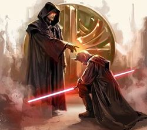

Zakon
"Sithowie zupełnie nie przejmują się naturalnym porządkiem Wszechświata. W istocie czarnoksiężnicy Sithów uważają, że należy on do nich."
-Vodo Siosk-Baas
Historia
Pierwotnie Sithowie byli humanoidalnym gatunkiem, zamieszkującym planetę o nazwie Korriban. Ci czerwonoskórzy humanoidzi mieli po cztery palce u oby rąk i po trzy u obu nóg. Charakterystyczną cechą gatunku były też mackowate wyrośla zlokalizowane nad oczami i wokół brody. Pierwotni Sithowie byli leworęczni.
Charakterystyczną cechą tego gatunku była wrażliwość na Moc. Początkowo wykorzystywali ją w niewielkim stopniu, łącząc jednocześnie ze swą magią, która była niesłychanie potężna i pozwalała robić niewiarygodne rzeczy. W walce posługiwali się orężem zwanym lanvarok, który był tak skonstruowany, żeby ułatwić im walkę lewą ręką. Sithowie posiadali również miecze z ciężkiego metalu, w których, produkujący je płatnerze zamknęli moc Sith, a na etapie chłodzenia napełniali je magią. Mimo to, nie były one niezniszczalne i nie mogły przeciąć wszystkiego.
Gdy populacja Sithów zwiększyła się gwałtownie, zaszły w tym społeczeństwie głębokie zmiany. Utworzono kasty. Najmniej wrażliwi na Moc i najbiedniejsi zostali zepchnięci do najniższej kasty i stali się niewolnikami. Wyżej znajdowały się kasty inżynierów i wojowników – Massassi Ci zaś, którzy byli bardziej wrażliwi na Moc stali się kastą kapłanów – Kissai. To spośród nich wywodzili się członkowie elity rządzącej – Lordowie Sith.
Około dwudziestu ośmu tysięcy lat przed Bitwą o Yavin znaczna część Galaktyki znalazła się pod panowaniem Bezkresnego Imperium Rakatan. Rakatanie zagrozili również Korribanowi. Ten humanoidalny gatunek, wywodzący się z planety Lehon, był, podobnie jak Sithowie, naturalnie wrażliwy na Moc i większa część ich technologii związana była z jej wykorzystaniem. Rakatanie używali Mocy głównie w celu rozwijania techniki. Uważa się, że byli oni wynalazcami technologii holokronu. W tych czasach, władcą i najpotężniejszym Lordem Sith był król Adas. Kiedy tylko zorientował się, że agresorzy dysponują szczególnymi umiejętnościami, postanowił, wykorzystując ich naiwność, przyswoić nową wiedzę, a następnie dostosować ją do potrzeb Sithów. W ten sposób zaawansowane technologie Rakatan, a przede wszystkim sposób tworzenia holokronów, trafiły do istot, które były ich prawdziwie godne. Po tym, jak król Adas posiadł dotychczas nieznane umiejętności, lud Sith pokonał najeźdźców i zmusił ich do opuszczenia Korribanu. Upadek Bezkresnego Imperium, datowany jest na około 25200 BBY. Od tego momentu, Sithowie posiadali umiejętność rejestrowania swojej wiedzy w formie holokronu, a także hipernapęd i wiele innych technologii, z których kasta inżynierów robiła dobry użytek.
Nadszedł czas by z mroków zapomnianej i fałszowanej historii wyciągnąć na światło dzienne prawdę o rzeczywistej naturze Mocy. I o historii powstania naszego Bractwa.
Początki Bractwa można dostrzec już w czasach starożytnych, w okresie, gdy Stara Republika była państwem sprawiedliwym oraz nieskorumpowanym. Rada Jedi stojąca na jej straży składała się z osób, które nie upajały się własną, wiedzą i potęgą. Ówcześni Jedi byli jednocześnie były tak słabi, że nie potrafili w pełni zapanować nad Mocą.
W tych chwalebnych czasach szkolenie Rycerza Jedi przebiegało w dwóch najważniejszych etapach. W pierwszym poznawał Moc, jej działanie, możliwości, uczył się opanowania i kontroli, wykorzystywania Mocy do samoobrony i zdobywania wiedzy. Uczył się jak kontrolować Moc przy użyciu siły swego umysłu, poprzez świadome myśli. To, czy dany uczeń był gotów zakończyć ten etap nauki i przejść do następnego zależało od tego, jak dobrze potrafi się kontrolować. Ta umiejętność była kluczowa dla następnej fazy szkolenia.
Podczas tej drugiej fazy nauki uczeń, a właściwie już Rycerz Jedi, poznawał sposoby oddziaływania na Moc przy pomocy swych uczuć. Sterowanie uczuciami poprzez Moc pozwala na dużo większe czerpanie z jej możliwości, niż kontrolowanie Mocy samym umysłem. Uczucia potrafią przy udziale Mocy dokonywać cudów, a jednocześnie siać zniszczenie na bezprecedensową skalę. Dlatego, przed rozpoczęciem drugiego etapu, uczeń musiał posiadać jak największą kontrolę nad sobą i swoimi emocjami, po to by móc wykorzystywać pełną potęgę Mocy nie stwarzając zagrożenia dla całej Galaktyki.
Dopiero Rycerz posiadający umiejętność kontrolowania Mocy siłą swoich uczuć, mógł czuć się prawdziwym Jedi. Ówcześni Mistrzowie Jedi szczególnie panowali nad emocjami i jednocześnie bardzo silnie je odczuwali.
W tamtych czasach nie istniało pojęcie Jasnej i Ciemnej strony Mocy. Owszem, zdarzali się odmieńcy wykorzystujący Moc w sposób niedopuszczalny dla Rycerza Jedi, lecz szybko byli eliminowani przez Radę.
 Niestety, w miarę upływu czasu w Starej Republice zachodziły zmiany na gorsze – ideały ulegały wypaczeniu, do władzy dochodzili ludzie działający z pobudek egoistycznych, nie zaś dla dobra ogółu. Zaczynała pojawiać się korupcja. W tym samym okresie doszło także do zmian w Radzie Jedi. Starzy Mistrzowie powoli odchodzili, nowi zaś, nie byli już tak oświeceni. Na skutek kilku niefortunnych incydentów, związanych z uczniami rozpoczynającymi przedwcześnie drugi etap szkolenia, zakończonymi z reguły strasznymi konsekwencjami (jedna zniszczona planeta, kilka miliardów ofiar, wyginięcie jednego z gatunków ssaków wodnych w całej znanej Galaktyce), Rada Jedi odstąpiła od nauczenia wiedzy w drugiej fazie szkolenia. Po pewnym czasie, na skutek nacisków ze strony rządu Republiki oraz rozgrywek politycznych, w Radzie Jedi uznano używanie Mocy poprzez emocje za nielegalne, a pozostałych przy życiu Mistrzów, którzy posiadali tą wiedzę odsunięto od Rady.
Niestety, w miarę upływu czasu w Starej Republice zachodziły zmiany na gorsze – ideały ulegały wypaczeniu, do władzy dochodzili ludzie działający z pobudek egoistycznych, nie zaś dla dobra ogółu. Zaczynała pojawiać się korupcja. W tym samym okresie doszło także do zmian w Radzie Jedi. Starzy Mistrzowie powoli odchodzili, nowi zaś, nie byli już tak oświeceni. Na skutek kilku niefortunnych incydentów, związanych z uczniami rozpoczynającymi przedwcześnie drugi etap szkolenia, zakończonymi z reguły strasznymi konsekwencjami (jedna zniszczona planeta, kilka miliardów ofiar, wyginięcie jednego z gatunków ssaków wodnych w całej znanej Galaktyce), Rada Jedi odstąpiła od nauczenia wiedzy w drugiej fazie szkolenia. Po pewnym czasie, na skutek nacisków ze strony rządu Republiki oraz rozgrywek politycznych, w Radzie Jedi uznano używanie Mocy poprzez emocje za nielegalne, a pozostałych przy życiu Mistrzów, którzy posiadali tą wiedzę odsunięto od Rady.
Czas płynął, a wraz z nim wiele się zmieniało. Rada Jedi opracowała koncepcję Jasnej i Ciemnej Strony Mocy, według której wszyscy posługujący się Mocą poprzez ukierunkowywanie swoich emocji uznawani byli za osoby, które wybrały ścieżkę Mroku, a zatem powinni być ścigani i eliminowani. Republika stawała się coraz bardziej odległa od swych ideałów, a garstka dawnych Mistrzów starała się zachować starożytną wiedzę dla przyszłych pokoleń i unikać prześladowania.
24,500 BBY miała miejsce Pierwsza Wielka Schizma. Wydarzenie to miało związek ze wspomnianymi nieporozumieniami wśród Jedi, które dotyczyły Mocy. Wtedy to jeden z Mistrzów Jedi imieniem Xendor wraz ze swoją kochanką Arden Lyn, sprzeciwili się ograniczeniom, które nałożyła na Jedi Rada. Buntownicy doszli do wniosku, że aby właściwie korzystać z Mocy, konieczna jest zarówno umiejętność samokontroli jak i wykorzystywanie emocji. Próba przywrócenia dawnych poglądów nie została zaakceptowana, a ci, którzy je promowali uznani zostali za upadłych. Pierwszy wielki rozłam w postrzeganiu Mocy został stłumiony.
Kolejne nieporozumienie pomiędzy Jedi miało miejsce w 7,003 BBY, kiedy to Ajunta Pall, Gandalf D’evar, XoXaan i Karness Muur za swe próby odtworzenia światów zniszczonych podczas Pierwszej Wielkiej Schizmy zostali okrzyknięci odstępcami przez Radę Jedi, która nie mogła pojąć ich nowych umiejętności. Ten konflikt światopoglądowy znamy jako Drugą Wielką Schizmę. Przez kolejne sto lat trwały walki, a okres ten nazwano Stuletnią Ciemnością. Ostatecznie zbuntowani Mistrzowie Jedi zostali wygnani z Republiki i osiedli w przestrzeni skolonizowanej przez Sithów. Wygnani Jedi uznani zostali przez Lordów Sith za równych sobie bogów. Dzięki zręcznemu skrytobójstwu przejęli władzę z rąk ówczesnego króla Sithów, Lorda Dathki Grausha. Wygnańcy szybko zostali przyjęci w szeregi Lordów Sith, a Ajunta Pall jako pierwszy w historii ogłosił się Mrocznym Lordem Sith.
Nowi władcy utworzyli kult poświęcony Ciemnej Stronie Mocy, wykorzystujący wszystko, co mogła ona zaoferować. Trwała rekrutacja i szeregi istot korzystających z Ciemnej Strony Mocy powiększały się. Członkowie kultu drwili sobie z koncepcji współpracy i porozumienia, dążąc do uwolnienia Mocy w formie prowadzącej do absolutnej potęgi. Sithowie rozwijali więc swój zakon w całkowitej opozycji do Jedi.
Mijały lata, rdzenni Sithowie i Wygnani Jedi połączyli się i powstały hybrydy bardzo wrażliwe na Moc. Wkrótce tylko niewielu spośród kasty rządzącej było Sithami czystej krwi. Mroczni Jedi z czasem całkowicie zniknęli, gdyż ich potomstwo z sithyjskimi konkubinami było już hybrydami. Ich agresywne Imperium cały czas zwiększało swoje granice, ale nawet gdy podbijana planeta posiadała znaczną ludzką populację rekrutowani wśród niej kapłani i Lordowie Sith szybko mieszali się z pozostałymi.
Kolejne lata panowania Sithów nazwane zostały Złotym Wiekiem Sith. Mrocznym Lordem Sith został Marka Ragnos. Około 5000 BBY, kiedy na Korribanie wylądowali Jori i Gav Daragon, rozpoczął się kres Złotego Wieku. Ten okres w historii, to przede wszystkim walka o władzę między Naga Sadowem i Ludo Kreshem. Wtedy to, na skutek wewnętrznych waśni między Lordami, jak również w wyniku wojny z Republiką, Imperium Sith zostało niemal całkowicie zniszczone. Ludo Kresh zginął, zaś pokonany w Wielkiej Wojnie Hiperprzestrzennej Naga Sadow udał się na dobrowolne wygnanie na Yavin IV. Lord Sithów Vitiate wraz ze swymi zwolennikami uciekł na Nieznane Terytoria gdzie ogłosił się Imperatorem Sithów, a inne pozostałości starożytnego Imperium przetrwały na planetach Kesh i Vjun i wielu, wielu innych.
Kolejny rozdział historii Sith rozpoczął się, gdy na Ciemną Stronę Mocy przeszedł Freedon Nadd. Najpierw, podczas pobytu na Korribanie, zapoznał się ze starożytnymi pozostałościami Imperium Sith, a dzięki informacjom tam zebranym dowiedział się o miejscu, w którym przebywa Naga Sadow. Freedon Nadd udał się na Yavin i tam czerpał nauki od ostatniego Mrocznego Lorda. Jest wielce prawdopodobne, że dzięki temu dziedzictwo starożytnych Sithów miało swoją kontynuację.
Ponieważ gatunek Sith i ludzko-sithyjskie hybrydy zostały zdziesiątkowane, przyjmuje się, że moment, w którym Freedon Nadd ogłosił się Mrocznym Lordem, jest równocześnie chwilą, gdy nazwa „Sith” przestała oznaczać przynależność gatunkową, a stała się określeniem wyznawców pewnej filozofii i kultury.
Kilkaset lat później duch Freedona Nadda został przyzwany przez jego potomka, króla Onderonu, Ommina. Władca poznał większość sekretów Lorda, a na Onderonie zapanowała Ciemna Strona Mocy. Freedon Nadd, Ommin i jego żona Amanoa byli w tamtych czasach jedynymi gotowymi wpływać na Galaktykę istotami, które miały wiedzę o tajnikach Sithów.
Równolegle, w tym samym czasie, w systemie Teta rozwijała się organizacja mająca stać się drugą gałęźą dziedzictwa Sithów – kult Krathów. Satal i Aleema Keto, założyciele kultu znali historię Wielkiej Wojny Hiperprzestrzennej, jednak nie byli w stanie zrobić z niej praktycznego użytku, póki nie trafili na Onderon i nie zaczęli pobierać nauk od ducha Freedona Nadda.
Około 3990 BBY, kiedy kuzynostwo Keto dokonało przewrotu w Systemie Teta, a małżeństwo Ommin i Amanoa spoczywali w grobowcu wraz ze swym przodkiem, Rycerz Jedi Exar Kun w poszukiwaniu wiedzy dotarł na planetę Onderon, a stamtąd udał się na Dxun, gdzie objawił mu się duch Freedona Nadda. Nauki Mrocznego Lorda sprawiły, że Exar Kun przeszedł na Ciemną Stronę Mocy, a wkrótce potem podporządkował sobie Krathów i pozyskał ucznia Ulica Qel-Dromę.
Wtedy to, Sithowie po raz pierwszy próbowali odbudować świetność Imperium i po raz kolejny zemścić się na Jedi. Mroczny Lord Exar Kun nadał swoim zwolennikom miano Bractwa Sithów, po raz pierwszy w historii używając tej nazwy. Wielka Wojna Sith spustoszyła dziesiątki światów, a Jedi przeciągnięci na Ciemną Stronę Mocy przez Exara Kuna zabijali na jego rozkaz swoich byłych Mistrzów. Niestety, w bitwie o Yavin IV, Exar Kun poniósł klęskę, a jego duch przetrwał tylko dzięki dobrowolnemu uwięzieniu się w murach świątyni.
Kolejnym, istotnym wydarzeniem w historii Sithów były Wojny Mandaloriańskie. Mandalorianie, którzy już wcześniej współpracowali z Sithami, dobrowolnie uznając Ulica Qel-Dromę za swego władcę, zostali podpuszczeni do drugiego ataku na Republikę przez wysłanników Imperatora Sithów. Jedi, którzy wyruszyli by pokonać najeźdźców, Revan i Malak, natrafili na prawdziwe źródło Mandaloriańskiej agresji… i sami stali się jego poplecznikami. Do Republiki wrócili jako Lordowie Sithów, wywołując Wojnę Domową Jedi. Wydaje się, że w pewnym momencie postanowili nie dzielić się władzą z odległym Imperatorem Sithów, gdyż najpierw Darth Revan, a później, pozbywszy się go, Darth Malak, sami ogłosili się Mrocznymi Lordami Sithów.
Około 3950 BBY spadkobiercami Dartha Revana byli założyciele Triumwiratu Sithów: Darth Traya, Darth Nihilus i Darth Sion. Współpraca trojga Sithów była jednak z góry skazana na porażkę ze względu na nadmierną i pozbawioną instynktu samozachowawczego rywalizacją pomiędzy nimi. Dlatego też, pakt szybko się rozpadł.
Trzysta lat później najwyraźniej nieśmiertelny Imperator Sith zjednoczył frakcje pozostałe po rozpadzie Imperium Sith Dartha Revana i wszystkich jego spadkobierców. Jego inwazja na Republikę była tym, o czym marzyły duchy Sithów starożytnego Imperium – zemstą. Świątynia Jedi na Coruscant płonęła, sama planeta-miasto mieszcząca najwyższe władze Republiki została splądrowana, a Imperium Sithów było większe niż kiedykolwiek. W końcu jednak i on został pokonany.
Sithowie odrodzili się ponownie około 2000 BBY, kiedy to Mistrz Jedi Phanius ogłosił się Darthem Ruinem, Mrocznym Lordem Sith. Mimo śmierci Phaniusa, przez następne tysiąc lat trwały wojny między Jedi i Republiką, a Sithami, Nowe Wojny Sith. Kolejni Mroczni Lordowie obejmowali władzę w Nowym Imperium Sith, jeszcze większym niż to, którym władał Imperator Sith. Republika kurczyła się z każdym rokiem, a późniejsi historycy nazwali ten okres jej Mrocznym Wiekiem. Wreszcie nastąpił impas, gdy żadnemu z Sithów nie udało się narzucić władzy innym i ogłosić się Mrocznym Lordem.
Republika odzyskiwała znaczenie, terytoria i siły, do czasu, gdy Lord Kaan założył Bractwo Ciemności. Zaproponował on swoim dwóm największym rywalom – Lordom Kopeczowi i Qordisowi, że podzieli się z nimi tytułem Mrocznego Lorda, że będą władać wspólnie. I tak się stało. Kaan rozdawał tytuł Mrocznego Lorda na prawo i lewo, aż w jego Bractwie było ich co najmniej dwudziestu sześciu, ale wydawało się, że to działa. Wojna Światła i Ciemności znów zepchnęła Republikę na skraj zagłady… aż Sithowie ugrzęźli w potyczce z Jedi na planecie Ruusan. Być może wygraliby i tę walkę, gdyby nie zdrada.
Bane, Mroczny Lord który przyjął zakazany przez Kaana tytuł Darth uznał, że pozostali nie są godni władania Ciemną Stroną. Trzeba oddać mu sprawiedliwość, jego intryga, która doprowadziła do upadku Kaana, była bez zarzutu. Ale czy dla osobistej władzy warto było rezygnować z podbicia Republiki i ostatecznego zniszczenia Jedi? Na pewno nie był to pierwszy przypadek, gdy żądny potęgi Sith tak uznał.
Sith, który przetrwał śmierć innych, za swą siłę uznał cierpliwość i te wszystkie cechy Jedi, którymi jego współbracia wzgardzili. Gdy inni Sithowie rzucali się sobie z jego podpuszczenia do gardeł – on stał w cieniu. Gdy zaczęła się rzeź – ukrył się i czekał na swój moment, swoją szansę. Gdy Kaan użył potężnego rytuału Magii Sith by zniszczyć wszystkich słabych Mocą na Ruusan, Darth Bane przetrwał jako jeden z garstki.
Gdy zarówno on, jak i Jedi uwierzyli, że wszyscy Sithowie zginęli, Darth Bane zaczął działać. Z początku pracował sam, ale wiedział, że nie będzie żył wiecznie i dlatego wkrótce zaczął szukać ucznia, któremu chciał przekazać swoją wiedzę. Właściwą kandydatką okazała się Darth Zannah i to właśnie ją postanowił szkolić, aby kiedyś stała się Mroczną Lady Sith. Trening obejmował używanie Ciemnej Strony, historię Zakonu oraz taktykę walki i zdobywania władzy. Darth Bane, jako pierwszy wdrożył w życie Regułę Dwóch, według której, jednocześnie mogło być tylko dwóch Sithów – Mistrz i Uczeń. Miało to zapobiec zgubnej wśród Sithów rywalizacji, jak również pomóc im przetrwać w kolejnych trudnych czasach. Przez tysiąc lat Mistrzowie szkolili swych Uczniów. Gdy umierał Mistrz, stawał się nim Uczeń, który zaczynał szkolić nowego adepta mroku. Ówcześni Sithowie działali w sekrecie, czekając na swą szansę zemsty na użytkownikach Jasnej Strony Mocy. Żyli nadzieją wojny.
Wreszcie, dziewięć lat po narodzinach Anakina Skywalkera, uczeń Dartha Sidiousa, Darth Maul, po raz pierwszy wyszedł z ukrycia i udowodnił, że Sithowie nadal istnieją. Na rozkaz swego Mistrza, Darth Maul wyruszył, aby zniszczyć Qui-Gon Jinna i jego padawana Obi-Wana Kenobiego. W 19 BBY Anakin Skywalker przyjął imię Dartha Vadera i przeszedł na Ciemną Stronę Mocy. Niedługo potem doszło do przekształcenia Republiki w Imperium Galaktyczne, na czele którego stanął Imperator Palpatine, Darth Sidious i Mistrz Dartha Vadera w jednej osobie. Obaj Sithowie dokonali niemal całkowitej zagłady Jedi i wreszcie nie musieli się ukrywać.
Po mileniach zapomnienia, Bractwo Sithów zostało odtworzone przez Imperatora Palpatine w kilka miesięcy po tym, jak mianował się Imperatorem. Wtedy uznał, że potrzebne będzie mu zaplecze potężnych użytkowników Mocy i postanowił porzucić stosowaną dotychczas koncepcję Dartha Bane’a i odtworzyć Bractwo w postaci zbliżonej do tej z czasów Złotego Wieku Sithów i Wielkiej Wojny Sith. Rozpoczął akcję wyszukiwania odpowiednich kandydatów i szkolenia ich na Sithów. Pamiętając o przyczynach wprowadzenia doktryny Bane’a zmodyfikował Kodeks Bractwa tak, by najważniejsza w nim była lojalność.
Proces wyszukiwania kandydatów nie był prosty. Palpatine dążył do znalezienia nie tylko istot władających Mocą, takich by można było ich przeciągnąć na Ciemną Stronę Mocy, lecz takich, którzy jednocześni dążyli do wiedzy i potęgi, którzy pragnęli zostać Sithami.
Gdy udało mu się znaleźć kilku, którzy w przyszłości mieli stać się trzonem Bractwa, przeszkolił ich i dał podstawy do poszerzania wiedzy na własną rękę. Udostępnił im Korriban, planetę wypełnioną dokonaniami Sithów i ich duchami.
Tam powstała siedziba Bractwa. Nowi Sithowie spędzali większość swojego czasu na pogłębianiu wiedzy, badaniu wszystkiego, co pozostało po starożytnych Sithach i tylko z rzadka wykonywali powierzone im przez Palpatine’a inne zadania. Oficjalnym przywódcą Bractwa był Lord Vader, jednakże z powodu natłoku zajęć, tytuł ten był de facto honorowy. Sam Darth Sidious zdawał się całą ideę Sithów traktować li tylko jako narzędzie.
W 4 ABY Darth Sidious zginął zabity przez Dartha Vadera, który w chwilę później również zmarł. Kiedy dwóch potężnych Sithów poniosło śmierć, nielicznym ocalałym Jedi mogło się wydawać, że Ciemna Strona Mocy została pokonana. Nie wiedzieli, że właśnie budzi się do życia i rośnie w siłę potężna organizacja, której przywódcą jest Darth Freejack.
Tekst pierwotny autorstwa Lorda Xeovara i Brata Arbacesa, skompilowany samodzielną pracą tego pierwszego, nieznacznie zmodyfikowany z uwagi na nowe fakty przez Lorda Neilaxa. Nowego opracowania dawnych tekstów dokonała Siostra Artharcen z korektą Mistrza Gorthuara.
Kredo
Dla niektórych użytkowników Mocy kroczenie Jasną Stroną, nie dawało odpowiedniej satysfakcji. Ograniczało ich, nie pozwalało osiągnąć pełni rozwoju. W końcu, dlaczego ktoś obdażony potęgą, nie mógł z niej korzystać w pełni i sam narzucać na siebie ograniczenia? Taki sposób myślenia, prowadziło do korzystania z emocji, które są zarezerwowane jedynie dla Ciemnej Strony Mocy.
Strach, nienawiść, złość, pycha, zawiść, zazdrość. Wszystko to elementy, które dają Sithom energię, ale najważniejsza emocja stoi ponad nimi wszystkimi i jest nadrzędnym celem. Jest nią chęć posiadania, jak najwięcej władzy. Sithowie przechodzili przez najróżniejsze okresy ideologiczne i polityczne na przestszeni wieków i choć sam model sprawowania władzy czy ugrupowania ulegał zmianie, zawsze starali się przejąć kontrolę nad innymi. W końcu kilka prób przejęcia władzy w całej galaktyce są tu przykładem.
Tak jak w przypadku Rycerzy Jedi kierowali się swoistym kodeksem, który warto przeanalizować w celu poznania wartości, jakimi kierowali się Sithowie. Kodeks ten przedstawiam wam już w wersji przetłumaczonej
Spokój to kłamstwo, jest tylko pasja.
Dzięki pasji, osiągam siłę.Dzięki sile, osiągam potęgę.
Dzięki potędze, osiągam zwycięstwo.Dzięki zwycięstwu zrywam łańcuchy.Moc mnie wyzwoli.
Mamy tu więc odwrotność, a raczej wypaczenie Kodeksu Jedi, ale mimo tych antagonizmów, Kodeks ten nie jest jedynie demonicznym, lustrzanym odbiciem ideałów poświęconych Zakonowi
Pierwsza linijka mówi o tym, że uczucie spokoju jest żłudne, bowiem to co liczy się w życiu to oddanie się jakiejkolwiek pasji. Stagnacja i wieczny spokój to zaprzeczenie rozwoju. Dalej naspępuje rozwinięcie i stopniowanie oświecenia na ścieżce Ciemnej Mocy. Poprzez pasję człowiek zdobywa siłę, nie tylko fizyczną, ale i metaforyczną. Pasja daje mu cel w życiu, napędza go. Dzięki sile mamy potęge.
Ponownie potęgę dosłowną, jak np. podczas wygranego pojedynku i metaforyczną, w postaci wpływów ekonomicznych, politycznych i społecznych. Dzięki sile rośnie nasza potęga, a ta prowadzi nas do zwycięstwa. Jednak tutaj nie następuje koniec naszej ścieżki, bo zwycięstwo nie jest celem w samym sobie, a jedynie katalizatorem wszystkich poprzednich stopni, by w końcowym efekcie zerwać przysłowiowe łańcuchy.
Można je interpretować na każdy możliwy sposób, ale najprostrzy mówi o tym, że zrzucenie łańcuchów to uzyskanie totalnej, niepodważalnej wolności i wyzbycie się jakiejkolwiek, odgórnej kontroli. Na koniec występuje podsumowanie w postaci wyzwolenia, dzięki Mocy. Choć to akurat kończyło się najczęściej dla Sithów śmiercią i to rzadko przyjemną.
Jak to bywa w literaturze, sztuce czy po prostu w życiu zło, pomimo swojej banalności jest ono bardziej skomplikowane i złożone, niż ścieżka ludzi kierujących się porządkiem i harmonią. Z tego też powodu o filozofii Sithów napisano znacznie więcej tekstów, niż o ścieżce Jedi. Nie czuje się tu wystarczającym autorytetem, by wykładać pradawne teksty Lordów, dlatego odsyłam was do strony największej skarbnicy o tym temacie, czyli Bractwa Sith.